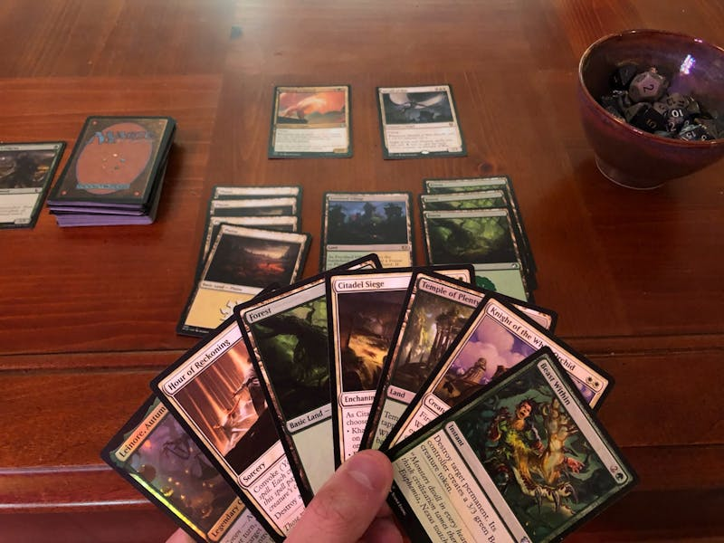
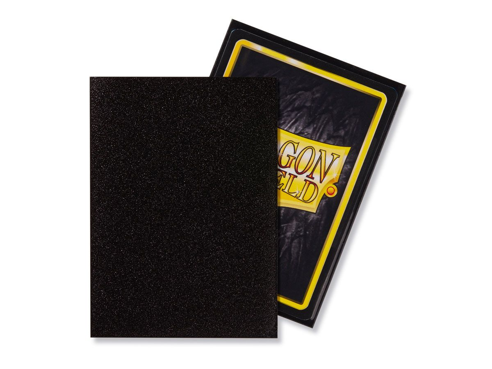

Últimas Noticias
Cargando noticias...
Sobre El Oso Verde
El Oso Verde es tu tienda especializada en la compra y venta de cartas de Magic: The Gathering. Contamos con una amplia selección de cartas individuales, accesorios y productos sellados para jugadores de todos los niveles.

Magic: The Gathering
Magic: The Gathering es un juego de cartas coleccionables con más de 25 años de historia. Los jugadores construyen mazos estratégicos y compiten utilizando criaturas, hechizos y tierras. Con miles de cartas disponibles, cada partida es única y llena de emoción.
Protege tus Cartas con Fundas Dragon Shield
Las fundas Dragon Shield son una de las mejores opciones para proteger tus cartas de Magic: The Gathering. Con una gran resistencia y calidad premium, garantizan la seguridad de tus cartas contra desgaste, suciedad y dobleces.
